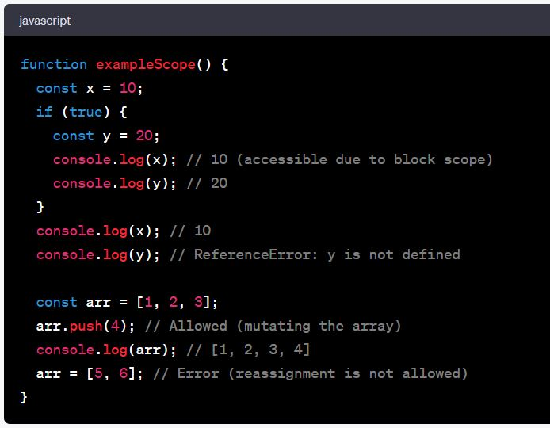

Discuss the scope of var, let, and const
In JavaScript, var, let, and const are used to declare variables, but they differ in terms of their scope, hoisting behavior, and mutability. Understanding their scope is essential for writing clean and maintainable code. Let's discuss the scope of each of these variable declarations:
-
Var:
Function-scoped: Variables declared with var are function-scoped. This means they are only accessible within the function in which they are declared, or globally if declared outside of any function.
Hoisting: Variables declared with var are hoisted to the top of their containing function or the global scope, which means the variable declaration is moved to the top during compilation, but the initialization remains in place.
Reassignment: 'var' variables can be reassigned and updated.
Example:

-
let:
Block-Scoped: Variables declared with let are block-scoped. They are accessible only within the block (e.g., inside loops, conditionals, or functions) where they are defined.
Hoisting: Like var, let is also hoisted, but it is not initialized with a value. This results in a "temporal dead zone" where you cannot access the variable before its declaration in the code.
Reassignment: let variables can be reassigned, but their value can change within the block scope.
Example:

-
const:
Block-Scoped: Like let, variables declared with const are block-scoped and only accessible within the block in which they are defined.
Hoisting: Similar to let, const is hoisted but not initialized with a value, resulting in a temporal dead zone.
Immutable: Variables declared with const cannot be reassigned after their initial assignment. However, the value they refer to can be mutated if it is an object or an array.
Example:

In modern JavaScript development, it's recommended to use let for variables that may change their value and const for variables that should remain constant. var is used less frequently due to its function-scoped nature and potential issues with hoisting and unintended global variables.
Tell us the use cases of null and undefined
In JavaScript, null and undefined are two distinct values used to represent missing or absent data, but they have slightly different use cases:
-
null:
Intentional Absence: The primary use case for null is to explicitly indicate that a variable or object property intentionally has no value or that it is empty. It is a programmer-defined value to signify emptiness.
As a Placeholder: You might use null as a placeholder value when you plan to assign a meaningful value to a variable or property later in your code.
Comparisons: You can use null in conditional statements or comparisons to check if a variable or property has been intentionally set to "nothing."
Example:
-
undefined:
Default Value: When a variable or object property is declared but not initialized, it is automatically assigned the value undefined. It represents the absence of a value that was never set.
Function Parameters: If a function is called with fewer arguments than declared in its parameters, the missing parameters are set to undefined.
Property Access: lf you try to access an object property that does not exist, you will get undefined.
Example:
In summary, null is typically used when you want to explicitly indicate the absence of a value for a variable or property, whereas undefined is often automatically assigned to variables or properties when they haven't been assigned a value. It's essential to understand these distinctions to write clean and predictable JavaScript code.
What do you mean by REST API?
REST API stands for Representational State Transfer Application Programming Interface. It is a set of architectural principles and constraints for designing networked applications. REST is not a specific technology or protocol but rather a style of designing web services and APIs. RESTful APIs are designed to be simple, scalable, and stateless, making them widely used for building web services and APIs on the internet.
Key characteristics and principles of REST APIs include:
-
Statelessness: Each request from a client to a server must contain all the information needed to understand and process the request. The server should not rely on any previous requests or shared state. This simplifies server design and scalability.
-
Resources: In a REST API, resources are the key abstractions. Resources can be thought of as any data or entity that can be manipulated. Resources are identified by unique URIs (Uniform Resource Identifiers).
-
HTTP Methods: RESTful APIs use standard HTTP methods (GET, POST, PUT, DELETE, etc.) to perform CRUD (Create, Read, Update, Delete) operations on resources. For example, GET is used to retrieve data, POST to create new resources, PUT to update resources, and DELETE to remove resources.
-
Representation: Resources can have multiple representations (e.g., JSON, XML, HTML) to describe their state. Clients can specify the desired representation using the Accept header, and servers can respond with the appropriate format.
-
Stateless Communication: Each request between client and server must be self-contained. Servers should not store any client state between requests. This makes REST APIs highly scalable and allows for easy load balancing.
-
Uniform Interface: REST APIs have a consistent and uniform interface, which simplifies both client and server implementations. This uniformity is achieved through the use of HTTP methods and status codes.
-
Client-Server Architecture: The client and server are separate entities that communicate over a network. This separation allows for better scalability and flexibility.
-
Layered System: REST allows for a layered system architecture where each component (e.g., load balancers, caching, security) is separate and can be modified or replaced without affecting the overall system.
RESTful APIs are commonly used for web services that serve data over the internet. They are popular due to their simplicity, scalability, and compatibility with the HTTP protocol, making them accessible to a wide range of clients and platforms. REST has become the dominant architectural style for building APIs on the web.